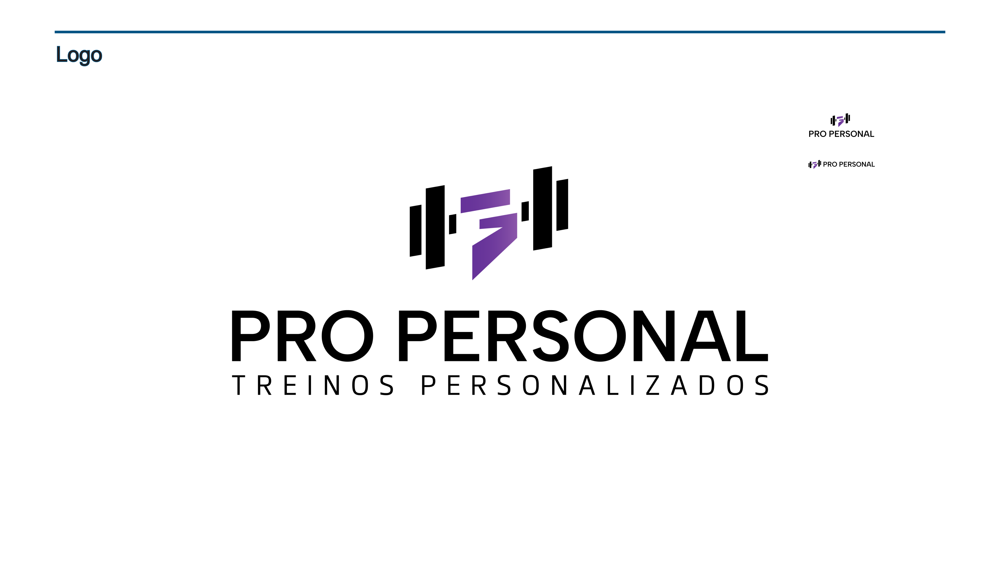
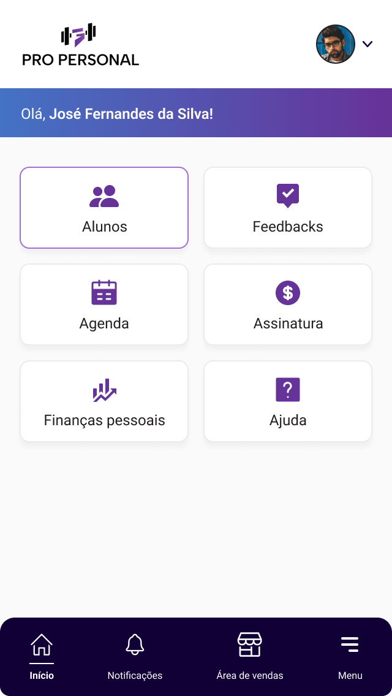
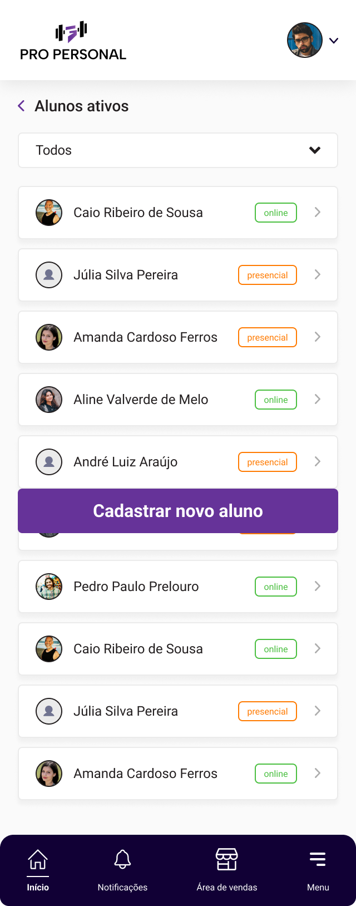
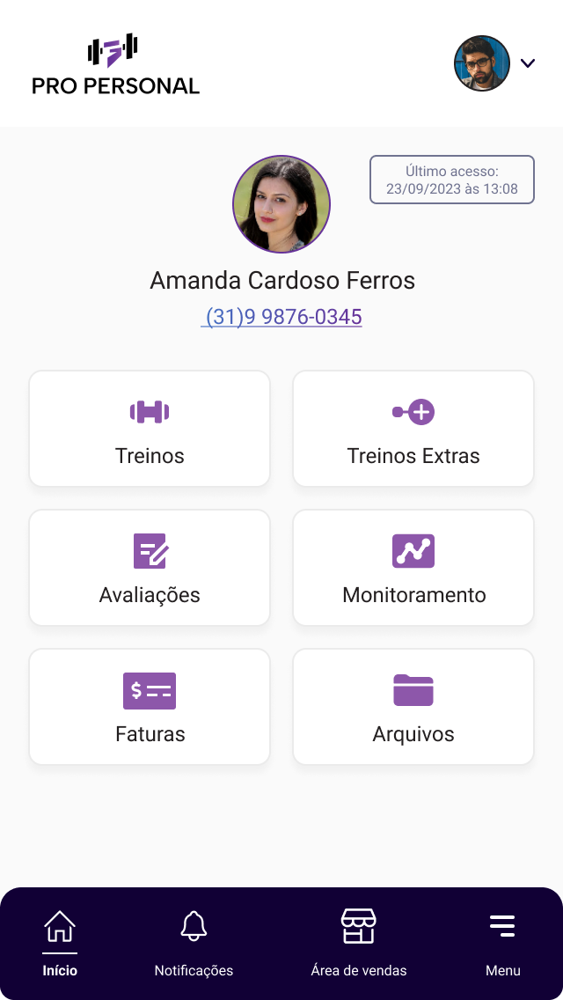
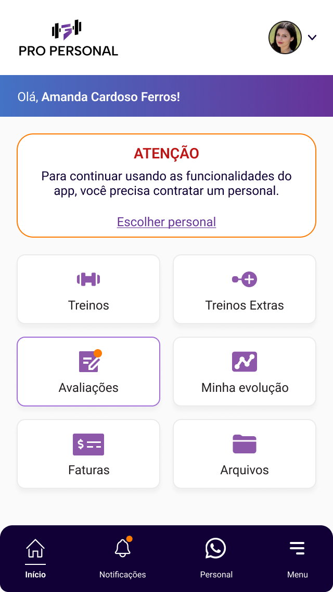
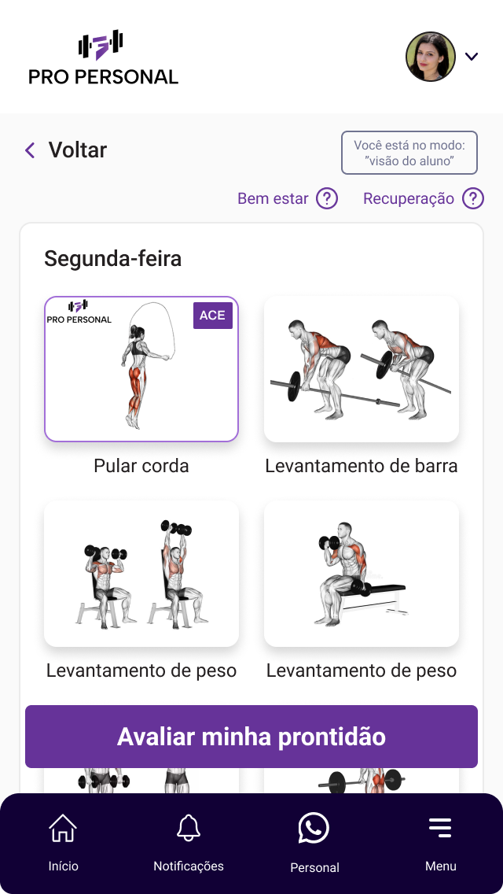
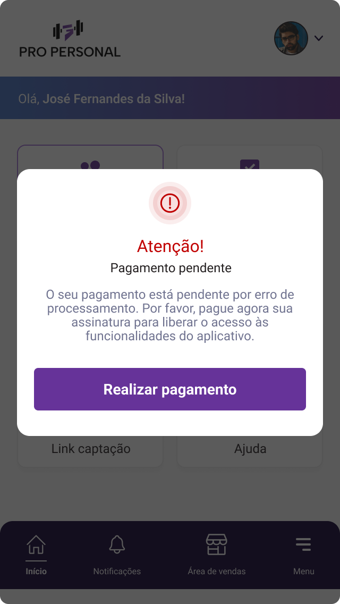
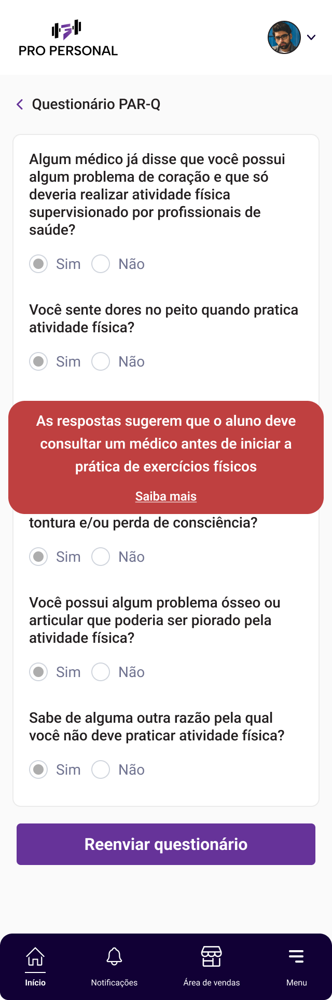
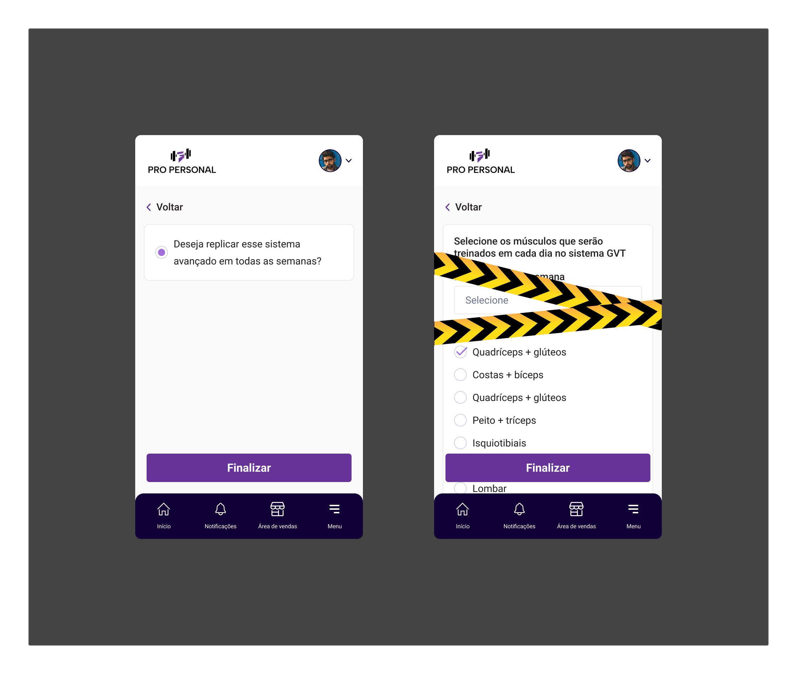

Caso de Estudo · Pro Personal

Especificação de 500+ páginas da USP traduzida em 700 telas
Style System
12 Estilos
12 Estilos de Cor Semânticos
Purple 1–4, Black Primary, Grey Primary e elevação Shadow Cards aplicada em 700 telas.
Componentes Autorais
Zero Kits
448 Componentes do Zero
Construídos sem Untitled UI, com nomenclatura em português voltada à metodologia esportiva.

Arquitetura de Produto
3 Perfis
Personal · Aluno · Admin
Ciclo de vida completo: periodização avançada, checklist, triagem PAR-Q e assinaturas nacionais.








Triagem Médica
● Aprovado
Questionário Clínico PAR-Q
Visualização do treinador (visualiza-sim / visualiza-não) com CRUD no painel administrativo para gestão de perguntas médicas.

Fisiologia do Exercício
11 Metodologias
Periodização Avançada de Força
GVT 10×10
Drop Set (DS)
Rest-Pause (RP)
Reps in Reserve (RIR)
Cluster Sets (CS)

Empatia Técnica com o Dev
Telas do Protótipo · 119 Telas em Altura Total
119 Telas Desdobradas


Documentação no Canvas
~20 notas adesivas com regras de implementação e camada NavBarProtótipo.
“
Passei dois anos desenhando produtos que nunca foram ao ar porque os builds no-code não conseguiam executá-los. O Pro Personal foi aprovado e elogiado pelo cliente, mas a engenharia travou. Essa frustração foi a razão exata pela qual aprendi a programar: hoje entrego designs que eu mesmo consigo implementar.
01 · FUNDAÇÃO
Design System Autoral & Domínio USP
Especificação de 500+ páginas da USP traduzida em 700 telas com 448 componentes autorais.
FIGMA SOLE DESIGNER
700 FRAMES
448 BESPOKE COMPS
12 COLOR STYLES